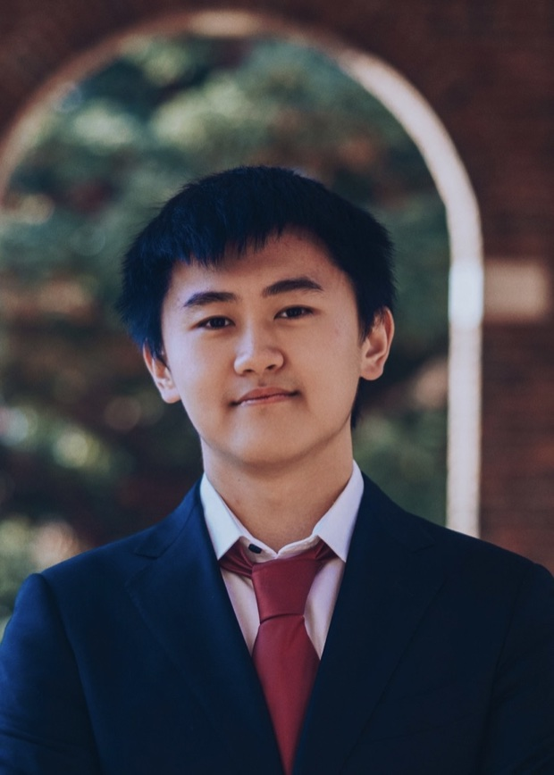

Hexuan (Matt) Wang
I'm a senior undergraduate at Johns Hopkins University studying Computer Science and Applied Mathematics & Statistics, fortunate to be advised by Daniel Khashabi, Philipp Koehn, and Jaemin Cho.
hwang302@jh.eduApplying to PhD programs for Fall 2027

HWResearch
I'm broadly interested in natural language processing, multimodal learning, and machine learning. My focus is faithfulness: a model should be faithful to its own knowledge and behavior, doing what it knows and what it says it will do, and stay grounded in its sources, with each claim resting on evidence it can point to. It should also be verifiable: a person can check all of this, and check it efficiently. I work on this in cited text, over structured data, under temporal shift, and across modalities.
News
- Jul 2026SciTaRC is accepted at COLM 2026.
- May 2026An earlier version of SciTaRC is accepted at the SURGeLLM Workshop @ ACL 2026.
- May 2026Awarded the Pistritto Undergraduate Research Fellowship (Computer Science, JHU).
- Apr 2026New preprint: Are Finer Citations Always Better?
- Apr 2026Awarded the Naddor Prize (Applied Mathematics & Statistics, JHU).
- Mar 2026New preprint: SciTaRC, a plan-annotated scientific tabular QA benchmark.
Publications
-
SciTaRC: A Plan-Annotated Scientific Tabular QA Benchmark for Language Reasoning and Complex Computation
TL;DRFrontier models fail scientific table QA not from wrong strategy but from a universal execution bottleneck: unfaithful step-by-step execution of their own correct plans.
-
Are Finer Citations Always Better? Rethinking Granularity for Attributed Generation
TL;DRForcing sentence-level citations degrades attribution; paragraph-level granularity best balances correctness with human verifiability.
Awards
- Pistritto Undergraduate Research Fellowship $6,000Computer Science, JHU2026
- Naddor PrizeApplied Mathematics & Statistics, JHU2026
- Dean's ListJohns Hopkins UniversityEvery semester
Teaching
TA/CA at JHU,
since 2024.
- NLP: Self-Supervised Models601.471/671Fall 2026
- Artificial Intelligence601.664Spring 2025 · Fall 2025 · Spring 2026
- Numerical Linear Algebra553.480/680Fall 2025
- Linear Algebra & Data Science553.291/295Spring 2024 · Spring 2025 · Fall 2025
- Mathematical Foundations for Computer Science601.230Fall 2024
Beyond
- I love singing. I'm a bass in the JHU Vocal Chords, our a cappella group, where I used to serve as Business Manager. We placed 3rd at the ICCA Quarterfinals in 2024 and 2026. I can reach a low D2, and on a good day a C♯2.
- Applied math research. Before my current research, I worked in
applied mathematics at JHU.
- Reconstructing the mathematics of FM sound synthesis, with Prof. Daniel Naiman.
- Sport scheduling optimization with the JHU Sports Analytics group; our schedules were adopted by Minor League Baseball.